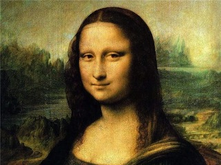

«Мо́на Ли́за», она же «Джоко́нда»; (итал. Mona Lisa, La Gioconda, фр. La Joconde), полное название — Портре́т госпожи́ Ли́зы дель Джоко́ндо, итал. Ritratto di Monna Lisa del Giocondo) — картина Леонардо да Винчи, находящаяся в Лувре (Париж, Франция), одно из самых известных произведений живописи в мире, которое, как считается, является портретом Лизы Герардини, супруги торговца шёлком из Флоренции Франческо дель Джокондо, написанным около 1503—1505 года.